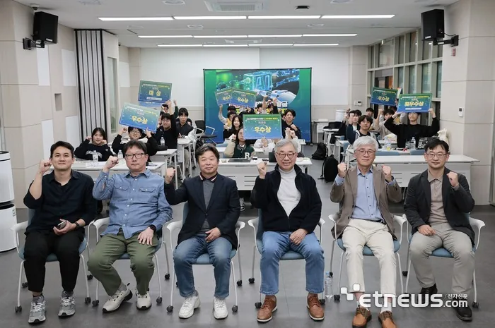
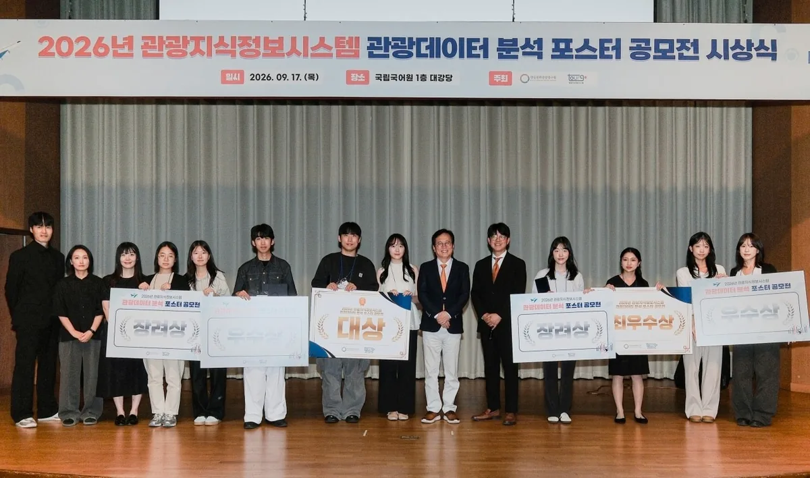

온지붕, 미래융합인재 발굴 SW 챌린지 대상 (새 창)
건축물대장 AI 분석으로 석면 슬레이트 주택을 찾는 「온지붕」으로 팀 도달이 대상을 받았다는 대학 보도. 본문에 단국대 이연수 참여 명시.
Archive
전체 프로젝트, 수상 내역, 발표 예정, 보도, 기록을 페이지별로 나눠 모았습니다.
Media
제 이름이 실린 기사와 학교·기관 소식을 프로젝트별로 모았습니다.
기사 16건매체 14곳프로젝트 3개 –
대상 · 과학기술정보통신부장관상
6건

건축물대장 AI 분석으로 석면 슬레이트 주택을 찾는 「온지붕」으로 팀 도달이 대상을 받았다는 대학 보도. 본문에 단국대 이연수 참여 명시.
함께 보도된 기사
같은 소식을 실은 매체 4
최우수상 · 소방청장상
6건
단국대 DKU Today의 사각119 소방청장상 수상 소식
함께 보도된 기사
우수상 · 한국문화관광연구원장상
4건

팀 스타트링크의 관광 체류 격차 분석 수상작 소개
함께 보도된 기사